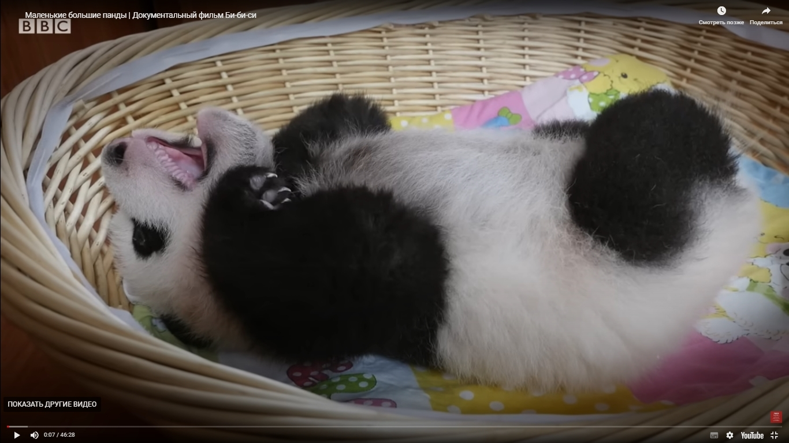
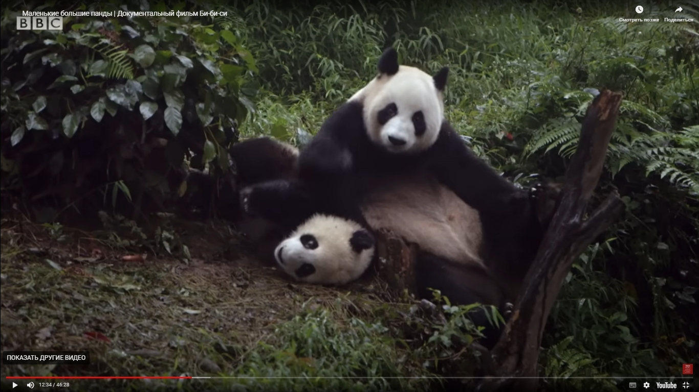
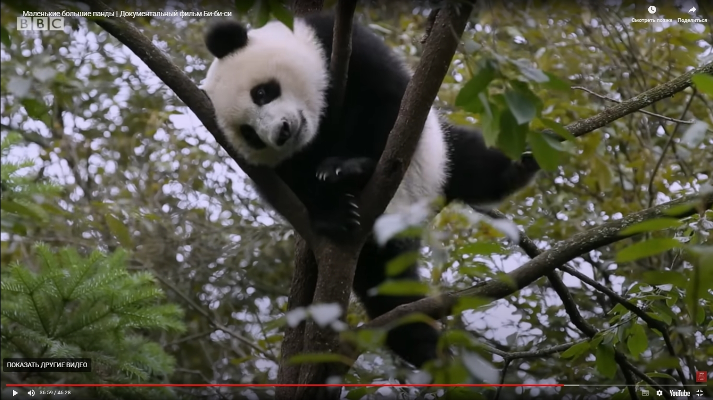

The Beijing Zoo



Population:
About 1,590 individuals
Habitat:
Temperate forests high in the mountains of southwest China
Diet:
A panda's daily diet consists almost entirely of the leaves, stems and shoots of various bamboo species. Bamboo contains very little nutritional value so pandas must eat 12-38kg every day to meet their energy needs.